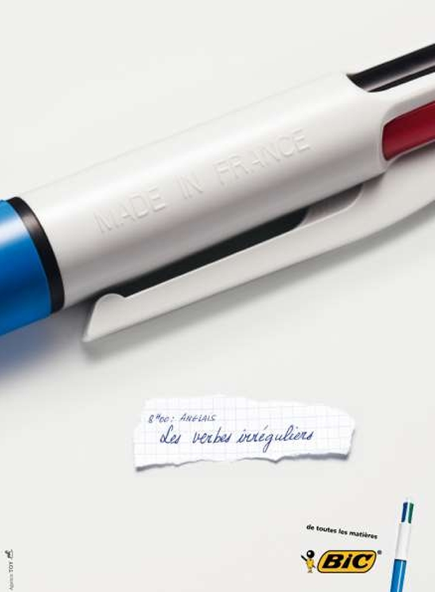

Création de l’identité d’une entreprise: le slogan
Le lien entre le slogan et la marque
Les quatre recharges du stylo sont mises l’une à côté de l’autre et forment quatre bars d’un graphique statistique. Leur niveau d’encre montre une baisse. Sur un bout de papier il y a la note manuscrite: “14h00: Économie La crise de 1929”. En bas à droite, on lit le mot “bic” et la phrase “de toutes les matières.”

Gros plan sur le stylo, là où il y a écrite l’origine de fabrication du produit: “Made in France.” Plus loin, sur un bout de papier on lit la note manuscrite: “8h00 Anglais, Les verbes irréguliers.” On note que le verbe anglais to make fait aussi partie de la liste des verbes irréguliers. En bas à droite, on lit le mot “bic” et la phrase “de toutes les matières.”
Les quatre recharges du stylo apparaissent en diagonale sur la page comme dans une formation des missiles de guerre. Sur un bout de papier on lit la note manuscrite, “15h00: Histoire, La crise de Cuba.” En bas à droite on lit le mot “bic” et la phrase “de toutes les matières.”
Le stylo apparaît en gros plan sur la page. On voit clairement le côté avec les couleurs rouge et noir. Sur un bout de papier, il y a la note manuscrite “16h00: Littérature, Stendhal.” On note que Stendhal est l’auteur du fameux roman français du début du 19e siècle Le rouge et le noir. En bas à droite on lit le mot “bic” et la phrase “de toutes les matières.”
On voit un gros plan du stylo, surtout le côté bleu et rouge. Sur un bout de papier il y a la note manuscrite “10h00: Éducation civique, Liberté, Égalité, Fraternité.” En bas à droite, on lit le mot “bic” et la phrase “de toutes les matières.”
Le stylo apparaît comme une fusée spatiale. Sur un bout de papier on lit la note manuscrite “11h00: Physique, La conquête de l’espace.” En bas à droite on lit le mot “bic” et la phrase “de toutes les matières.”
Activité
Ci-dessous il y a une liste de quelques marques connues avec leurs slogans. Certaines marques ont souvent renouvelé leur slogan. Dans ce cas, choisissez celui que vous préférez, puis répondez aux questions suivantes:
Air France
- Air France embellit le ciel depuis 75 ans
- Air France transporte tout, partout!
- Le ciel de vos vacances
- Le confort qui va vite
- Gagner le cœur du monde
- Faire du ciel le plus bel endroit de la terre
Yves Rocher (marque des produits de beauté naturels)
- Ce qui est essentiel rend belle
- La science au cœur du végétal
- La science peut beaucoup, mais pas tout
- Un produit de beauté doit-il être cher pour être de qualité ?
- La science de la beauté par les plantes
- On n’a jamais autant respecté la nature des femme
- Leçon de beauté : être soi-même
Amora (marque de moutarde)
- Pour multiplier vos menus
- Par amour du goût vrai
- Question goût, ça change tout
- Fine et forte
- Ma cuisine a plus de goût et ça change tout !
- Donnez bonne mine à vos plats
- Des recettes à réussir en un tour de main
- Par amour du gout
Darty (Magasin d’électroménager)
- Le contrat de confiance.
Babybel (marque de fromage)
- Un fromage sans façon que l’on mange de cent façons
- Du lait et de la bonne humeur à croquer
- Le bon petit fromage qui se sent bien partout
- Le petit fromage des grands sourires
- 360° de bonheur
Contrex (marque d’eau)
- Mangez léger et buvez Contrex
- Partenaire de la mode
- Ligne et beauté
- Ne doutez plus, vous êtes très belle
- Mon partenaire minceur
Maille (marque de moutarde)
- Toute la magie d’un goût subtil et fruité
- Il n’y a que Maille qui m’aille
Typologie des slogans
La phrase impérative ou injonctive: le slogan impératif interpelle directement le public ciblé, c’est un appel à l’action. Le public est appelé à s’engager à une action avec le produit de la marque qui aura une effet positive dans sa vie.
La phrase nominale: le slogan à la forme nominale (une phrase sans verbe) permet la création des messages courtes qui accélèrent l’accès au sens. Ces slogans visent à créer des associations positives dans l’esprit du consommateur.
Assertions malines: enfin, il y a une troisième catégorie des slogans où la phrase empreinte les caractéristiques d’un proverbe, d’un aphorisme, ou d’un jeu de mots. Dans ce cas, il y a souvent des allitérations (répétition des consonnes) ou des assonances (répétition des voyelles) avec le nom de la marque, voire de la répétition du nom de la marque dans le slogan. Ce type de slogan facilite la mémorisation de la marque avec une association positive.
À vous
(voir fiche-slogan)
Avec votre partenaire, revenez maintenant à votre propre entreprise. Quel est le nom que vous avez choisi pour votre marque? Écrivez-le sur la première colonne. Ensuite écrivez les trois principales qualités de votre marque. Faites un brainstorming pour trouver un slogan percutant et accrocheur dans chacune des trois catégories. Partagez vos slogans avec les autres groupes pour avoir leur retours, commentaires et suggestions d’amélioration.